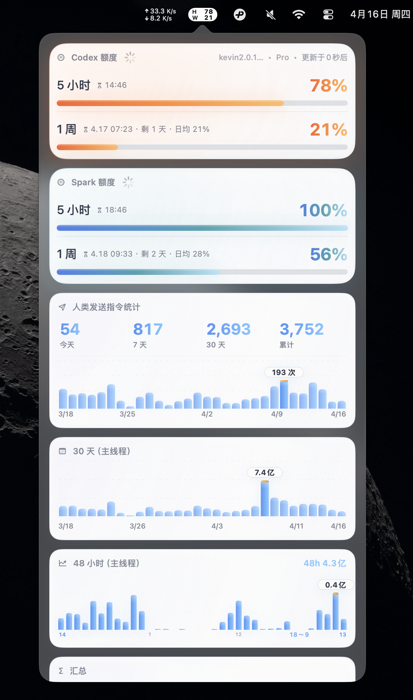

CodexTokenBar
Codex / OpenAI quota, token usage, credits, code review, and main-thread activity.
See Codex usage before it surprises you.
CodexTokenBar keeps quota windows, Spark usage, recent token charts, credits, code review allowance, and main-thread summaries in one menu bar dashboard.
Requirements: macOS 14+ (Apple Silicon + Intel).
GitHub Release: https://github.com/kevin20999/CodexBar/releases/latest
Current public builds are distributed from GitHub Releases. This page focuses on CodexTokenBar only.
- Codex quota and Spark quota cards with reset times.
- Recent 30-day and 48-hour token charts scoped to the main thread.
- Detailed today / 7-day / 30-day / cumulative token summaries.
- Credits, code review allowance, and human instruction activity when available.
- Focused menu bar UI for Codex / OpenAI workflows.

English
CodexTokenBar is a focused macOS menu bar dashboard for Codex / OpenAI usage. It helps you see quota, recent token usage, credits, and main-thread activity without opening a browser.
中文
CodexTokenBar 是一个面向 Codex / OpenAI 的 macOS 菜单栏仪表盘。它把额度、近期 token 用量、Credits 和主线程活动集中到一个弹窗里，不用来回切浏览器。
日本語
CodexTokenBar は、Codex / OpenAI 向けの macOS メニューバーダッシュボードです。クォータ、直近の token 使用量、Credits、メインスレッド統計を一つのポップアップにまとめます。
What you can see
Codex quota, Spark quota, today / 7-day / 30-day / cumulative totals, recent charts, code review allowance, and credits.
Why it helps
The app surfaces the numbers you normally check manually in ChatGPT or Codex settings, but keeps them one click away in the menu bar.
Privacy
Browser cookie import is opt-in. Dashboard parsing stays local to the app. No passwords are stored in the repository.